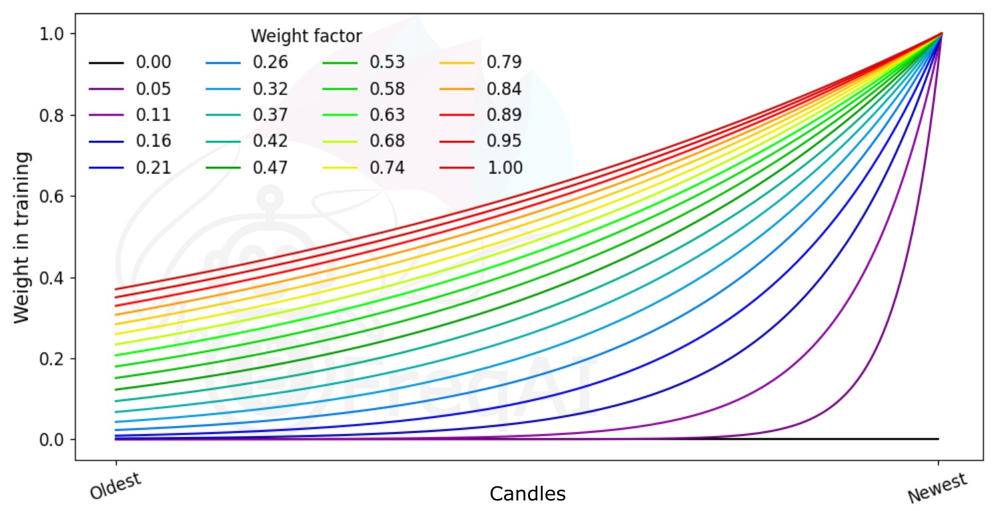
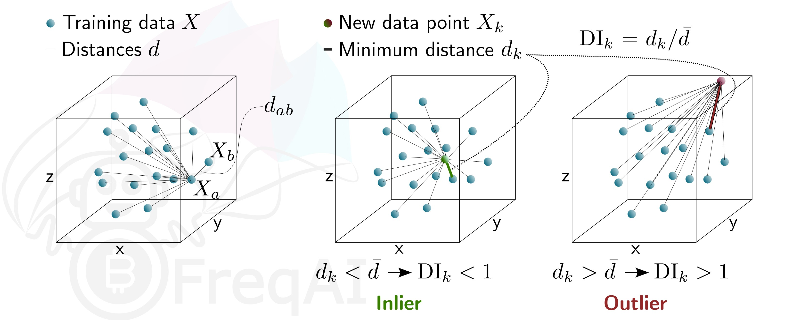
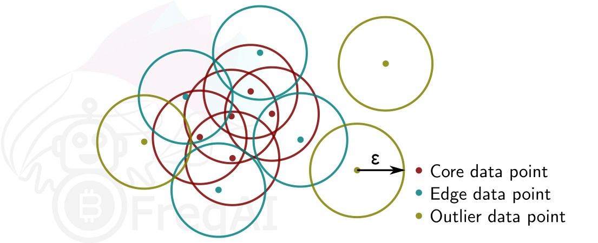

特征工程¶
定义特征¶
低层级特征工程在用户策略中通过一组名为 feature_engineering_* 的函数执行。这些函数设置基础特征，例如RSI、MFI、EMA、SMA、一天中的时间、交易量等。基础特征可以是自定义指标，也可以从您能找到的任何技术分析库中导入。FreqAI配备了一组函数来简化大规模快速特征工程：
| 函数 | 描述 |
|---|---|
feature_engineering_expand_all() |
此可选函数将根据配置中定义的 indicator_periods_candles、include_timeframes、include_shifted_candles 和 include_corr_pairs 自动扩展已定义的特征。 |
feature_engineering_expand_basic() |
此可选函数将根据配置中定义的 include_timeframes、include_shifted_candles 和 include_corr_pairs 自动扩展已定义的特征。注意：此函数不会跨 indicator_periods_candles 进行扩展。 |
feature_engineering_standard() |
此可选函数将使用基础时间周期的数据帧被调用一次。这是最后被调用的函数，意味着进入此函数的数据帧将包含由其他 feature_engineering_expand 函数创建的基础资产的所有特征和列。此函数适合进行自定义的复杂特征提取（例如 tsfresh）。此函数也适合放置任何不应自动扩展的特征（例如星期几）。 |
set_freqai_targets() |
必需函数，用于设置模型的目标。所有目标必须以 & 开头才能被 FreqAI 内部识别。 |
与此同时，高层级特征工程在 FreqAI 配置文件的 "feature_parameters":{} 部分进行处理。在此文件中，可以在 base_features 基础上决定大规模特征扩展，例如"包含相关性货币对"或"包含信息性时间框架"，甚至"包含近期K线"。
建议从源码提供的示例策略（位于 templates/FreqaiExampleStrategy.py）中的模板函数 feature_engineering_* 开始，以确保特征定义遵循正确的规范。以下是在策略中设置指标和标签的示例：
def feature_engineering_expand_all(self, dataframe: DataFrame, period, metadata, **kwargs) -> DataFrame:
"""
*Only functional with FreqAI enabled strategies*
This function will automatically expand the defined features on the config defined
`indicator_periods_candles`, `include_timeframes`, `include_shifted_candles`, and
`include_corr_pairs`. In other words, a single feature defined in this function
will automatically expand to a total of
`indicator_periods_candles` * `include_timeframes` * `include_shifted_candles` *
`include_corr_pairs` numbers of features added to the model.
All features must be prepended with `%` to be recognized by FreqAI internals.
Access metadata such as the current pair/timeframe/period with:
`metadata["pair"]` `metadata["tf"]` `metadata["period"]`
:param df: strategy dataframe which will receive the features
:param period: period of the indicator - usage example:
:param metadata: metadata of current pair
dataframe["%-ema-period"] = ta.EMA(dataframe, timeperiod=period)
"""
dataframe["%-rsi-period"] = ta.RSI(dataframe, timeperiod=period)
dataframe["%-mfi-period"] = ta.MFI(dataframe, timeperiod=period)
dataframe["%-adx-period"] = ta.ADX(dataframe, timeperiod=period)
dataframe["%-sma-period"] = ta.SMA(dataframe, timeperiod=period)
dataframe["%-ema-period"] = ta.EMA(dataframe, timeperiod=period)
bollinger = qtpylib.bollinger_bands(
qtpylib.typical_price(dataframe), window=period, stds=2.2
)
dataframe["bb_lowerband-period"] = bollinger["lower"]
dataframe["bb_middleband-period"] = bollinger["mid"]
dataframe["bb_upperband-period"] = bollinger["upper"]
dataframe["%-bb_width-period"] = (
dataframe["bb_upperband-period"]
- dataframe["bb_lowerband-period"]
) / dataframe["bb_middleband-period"]
dataframe["%-close-bb_lower-period"] = (
dataframe["close"] / dataframe["bb_lowerband-period"]
)
dataframe["%-roc-period"] = ta.ROC(dataframe, timeperiod=period)
dataframe["%-relative_volume-period"] = (
dataframe["volume"] / dataframe["volume"].rolling(period).mean()
)
return dataframe
def feature_engineering_expand_basic(self, dataframe: DataFrame, metadata, **kwargs) -> DataFrame:
"""
*Only functional with FreqAI enabled strategies*
This function will automatically expand the defined features on the config defined
`include_timeframes`, `include_shifted_candles`, and `include_corr_pairs`.
In other words, a single feature defined in this function
will automatically expand to a total of
`include_timeframes` * `include_shifted_candles` * `include_corr_pairs`
numbers of features added to the model.
Features defined here will *not* be automatically duplicated on user defined
`indicator_periods_candles`
Access metadata such as the current pair/timeframe with:
`metadata["pair"]` `metadata["tf"]`
All features must be prepended with `%` to be recognized by FreqAI internals.
:param df: strategy dataframe which will receive the features
:param metadata: metadata of current pair
dataframe["%-pct-change"] = dataframe["close"].pct_change()
dataframe["%-ema-200"] = ta.EMA(dataframe, timeperiod=200)
"""
dataframe["%-pct-change"] = dataframe["close"].pct_change()
dataframe["%-raw_volume"] = dataframe["volume"]
dataframe["%-raw_price"] = dataframe["close"]
return dataframe
def feature_engineering_standard(self, dataframe: DataFrame, metadata, **kwargs) -> DataFrame:
"""
*Only functional with FreqAI enabled strategies*
This optional function will be called once with the dataframe of the base timeframe.
This is the final function to be called, which means that the dataframe entering this
function will contain all the features and columns created by all other
freqai_feature_engineering_* functions.
This function is a good place to do custom exotic feature extractions (e.g. tsfresh).
This function is a good place for any feature that should not be auto-expanded upon
(e.g. day of the week).
Access metadata such as the current pair with:
`metadata["pair"]`
All features must be prepended with `%` to be recognized by FreqAI internals.
:param df: strategy dataframe which will receive the features
:param metadata: metadata of current pair
usage example: dataframe["%-day_of_week"] = (dataframe["date"].dt.dayofweek + 1) / 7
"""
dataframe["%-day_of_week"] = (dataframe["date"].dt.dayofweek + 1) / 7
dataframe["%-hour_of_day"] = (dataframe["date"].dt.hour + 1) / 25
return dataframe
def set_freqai_targets(self, dataframe: DataFrame, metadata, **kwargs) -> DataFrame:
"""
*Only functional with FreqAI enabled strategies*
Required function to set the targets for the model.
All targets must be prepended with `&` to be recognized by the FreqAI internals.
Access metadata such as the current pair with:
`metadata["pair"]`
:param df: strategy dataframe which will receive the targets
:param metadata: metadata of current pair
usage example: dataframe["&-target"] = dataframe["close"].shift(-1) / dataframe["close"]
"""
dataframe["&-s_close"] = (
dataframe["close"]
.shift(-self.freqai_info["feature_parameters"]["label_period_candles"])
.rolling(self.freqai_info["feature_parameters"]["label_period_candles"])
.mean()
/ dataframe["close"]
- 1
)
return dataframe
在所示示例中，用户不希望将 bb_lowerband 作为特征传递给模型，因此没有在其前面添加 %。然而，用户确实希望将 bb_width 传递给模型进行训练/预测，因此在其前面添加了 %。
定义完 base features 后，下一步是使用配置文件中强大的 feature_parameters 对其进行扩展：
"freqai": {
//...
"feature_parameters" : {
"include_timeframes": ["5m","15m","4h"],
"include_corr_pairlist": [
"ETH/USD",
"LINK/USD",
"BNB/USD"
],
"label_period_candles": 24,
"include_shifted_candles": 2,
"indicator_periods_candles": [10, 20]
},
//...
}
上述配置中的 include_timeframes 是策略中每次调用 feature_engineering_expand_*() 时对应的时间框架（tf）。在当前示例中，用户要求将 rsi、mfi、roc 和 bb_width 的 5m、15m 和 4h 时间框架包含在特征集中。
您可以通过 include_corr_pairlist 要求为信息性货币对包含每个已定义的特征。这意味着特征集将包含来自 feature_engineering_expand_*() 的所有特征，这些特征会应用于配置中定义的每个相关性货币对（示例中的 ETH/USD、LINK/USD 和 BNB/USD）的所有 include_timeframes 上。
include_shifted_candles 指定要包含在特征集中的前序蜡烛数量。例如，include_shifted_candles: 2 会指示 FreqAI 为特征集中的每个特征包含过去2根蜡烛的数据。
总体而言，示例策略用户创建的特征总数为：include_timeframes 的长度 * feature_engineering_expand_*() 中的特征数量 * include_corr_pairlist 的长度 * include_shifted_candles 的数量 * indicator_periods_candles 的长度
\(= 3 * 3 * 3 * 2 * 2 = 108\)。
了解更多关于创造性特征工程
查看我们面向用户的媒体文章，帮助学习如何进行创造性特征工程。
通过 metadata 更精细地控制 feature_engineering_* 函数¶
所有 feature_engineering_* 和 set_freqai_targets() 函数都会接收一个包含 pair（交易对）、tf（时间框架）和 period（周期）信息的 metadata 字典，这些信息是 FreqAI 用于自动化特征构建的。因此，用户可以在 feature_engineering_* 函数中使用 metadata 作为条件，来限制或保留特定时间框架、周期、交易对等的特征。
def feature_engineering_expand_all(self, dataframe: DataFrame, period, metadata, **kwargs) -> DataFrame:
if metadata["tf"] == "1h":
dataframe["%-roc-period"] = ta.ROC(dataframe, timeperiod=period)
这将阻止 ta.ROC() 被添加到除 "1h" 以外的任何时间框架。
从训练中返回额外信息¶
通过在自定义预测模型类中为 dk.data['extra_returns_per_train']['my_new_value'] = XYZ 赋值，可以在每次模型训练结束时将重要指标返回到策略中。
FreqAI 会获取该字典中赋值的 my_new_value，并将其扩展以适应返回给策略的数据框。然后，您可以通过 dataframe['my_new_value'] 在策略中使用返回的指标。FreqAI 中使用返回值的一个例子是 &*_mean 和 &*_std 值，它们用于创建动态目标阈值。
另一个示例如下，用户希望使用交易数据库中的实时指标：
"freqai": {
"extra_returns_per_train": {"total_profit": 4}
}
您需要在配置中设置标准字典，以便 FreqAI 能够返回正确的数据框形状。这些值很可能会被预测模型覆盖，但在模型尚未设置它们或需要默认初始值的情况下，预设值将被返回。
为时间重要性加权特征¶
FreqAI 允许您通过指数函数设置 weight_factor，以给予近期数据比历史数据更强的权重：
其中 \(W_i\) 是总数据集（包含 \(n\) 个数据点）中第 \(i\) 个数据点的权重。下图展示了不同权重因子对特征集中数据点的影响。

构建数据管道¶
默认情况下，FreqAI 会根据用户配置设置构建动态数据预处理管道。默认设置具有鲁棒性，旨在与多种方法兼容。这两个步骤分别是 MinMaxScaler(-1,1) 和 VarianceThreshold（用于移除方差为0的列）。用户可以通过更多配置参数激活其他步骤。例如，如果用户在 freqai 配置中添加 use_SVM_to_remove_outliers: true，FreqAI 将自动在管道中添加 SVMOutlierExtractor。同样地，用户可以在 freqai 配置中添加 principal_component_analysis: true 来激活 PCA。相异性指数通过 DI_threshold: 1 激活。此外，还可以通过 noise_standard_deviation: 0.1 向数据添加噪声。最后，用户可以通过 use_DBSCAN_to_remove_outliers: true 添加 DBSCAN 异常值移除功能。
更多信息
请查阅参数表获取关于这些参数的更多信息。
自定义管道¶
鼓励用户通过构建自己的数据管道来根据需求定制数据流程。这可以通过在 IFreqaiModel 的 train() 函数中简单设置 dk.feature_pipeline 为所需的 Pipeline 对象来实现，或者如果用户不想修改 train() 函数，可以重写 IFreqaiModel 中的 define_data_pipeline/define_label_pipeline 函数：
更多信息
FreqAI 使用 DataSieve 管道，它遵循 SKlearn 管道 API，但增加了 X、y 和 sample_weight 向量点移除之间的一致性、特征移除、特征名称跟踪等功能。
from datasieve.transforms import SKLearnWrapper, DissimilarityIndex
from datasieve.pipeline import Pipeline
from sklearn.preprocessing import QuantileTransformer, StandardScaler
from freqai.base_models import BaseRegressionModel
class MyFreqaiModel(BaseRegressionModel):
"""
Some cool custom model
"""
def fit(self, data_dictionary: Dict, dk: FreqaiDataKitchen, **kwargs) -> Any:
"""
My custom fit function
"""
model = cool_model.fit()
return model
def define_data_pipeline(self) -> Pipeline:
"""
User defines their custom feature pipeline here (if they wish)
"""
feature_pipeline = Pipeline([
('qt', SKLearnWrapper(QuantileTransformer(output_distribution='normal'))),
('di', ds.DissimilarityIndex(di_threshold=1))
])
return feature_pipeline
def define_label_pipeline(self) -> Pipeline:
"""
User defines their custom label pipeline here (if they wish)
"""
label_pipeline = Pipeline([
('qt', SKLearnWrapper(StandardScaler())),
])
return label_pipeline
在这里，您将定义在训练和预测期间用于特征集的确切管道。您可以通过将大多数 SKLearn 转换步骤包装在 SKLearnWrapper 类中（如上所示）来使用它们。此外，您还可以使用 DataSieve 库 中提供的任何转换。
您可以通过创建一个继承自 datasieve BaseTransform 的类并实现您的 fit()、transform() 和 inverse_transform() 方法，轻松添加自己的转换：
from datasieve.transforms.base_transform import BaseTransform
# import whatever else you need
class MyCoolTransform(BaseTransform):
def __init__(self, **kwargs):
self.param1 = kwargs.get('param1', 1)
def fit(self, X, y=None, sample_weight=None, feature_list=None, **kwargs):
# do something with X, y, sample_weight, or/and feature_list
return X, y, sample_weight, feature_list
def transform(self, X, y=None, sample_weight=None,
feature_list=None, outlier_check=False, **kwargs):
# do something with X, y, sample_weight, or/and feature_list
return X, y, sample_weight, feature_list
def inverse_transform(self, X, y=None, sample_weight=None, feature_list=None, **kwargs):
# do/dont do something with X, y, sample_weight, or/and feature_list
return X, y, sample_weight, feature_list
提示
您可以将此自定义类定义在与 IFreqaiModel 相同的文件中。
将自定义 IFreqaiModel 迁移到新管道¶
如果您创建了自定义的 IFreqaiModel 并使用了自定义的 train()/predict() 函数，且仍然依赖 data_cleaning_train/predict()，那么您需要迁移到新的数据管道。如果您的模型不依赖 data_cleaning_train/predict()，则无需担心此迁移。
有关迁移的更多详情可查阅此处。
异常值检测¶
股票和加密货币市场存在大量非规律性噪声，表现为异常数据点。FreqAI 提供了多种方法来识别此类异常值，从而降低风险。
使用相异指数识别异常值¶
相异指数旨在量化模型每个预测相关的不确定性。
您可以通过在配置中添加以下语句，让 FreqAI 使用 DI 从训练/测试数据集中移除异常数据点：
"freqai": {
"feature_parameters" : {
"DI_threshold": 1
}
}
这将在您的 feature_pipeline 中添加 DissimilarityIndex 步骤并设置阈值为 1。DI 允许因确定性较低而剔除异常（在模型特征空间中不存在）的预测。为此，FreqAI 测量每个训练数据点（特征向量）\(X_{a}\) 与所有其他训练数据点之间的距离：
其中 \(d_{ab}\) 是归一化点 \(a\) 和 \(b\) 之间的距离，\(p\) 是特征数量，即向量 \(X\) 的长度。训练数据点集的特征距离 \(\overline{d}\) 就是平均距离的简单均值：
\(\overline{d}\) 量化了训练数据的分布范围，该值将与新预测特征向量 \(X_k\) 到所有训练数据之间的距离进行比较：
由此可估算出差异指数为：
您可以通过调整 DI_threshold 来调节差异指数，从而增加或减少训练模型的外推范围。较高的 DI_threshold 意味着差异指数更为宽松，允许使用距离训练数据较远的预测结果；而较低的 DI_threshold 则会产生相反效果，从而舍弃更多预测结果。
下图展示了三维数据集的差异指数示意图。

使用支持向量机识别异常值¶
您可以通过在配置中添加以下语句，指示 FreqAI 使用支持向量机从训练/测试数据集中移除异常数据点：
"freqai": {
"feature_parameters" : {
"use_SVM_to_remove_outliers": true
}
}
这将在你的 feature_pipeline 中添加 SVMOutlierExtractor 步骤。SVM 将在训练数据上进行训练，任何被 SVM 判定为超出特征空间的数据点都将被移除。
你可以选择通过配置文件中的 feature_parameters.svm_params 字典为 SVM 提供额外参数，例如 shuffle 和 nu。
参数 shuffle 默认设置为 False 以确保结果一致性。如果设置为 True，由于 max_iter 过低导致算法无法达到要求的 tol，在同一数据集上多次运行 SVM 可能会产生不同结果。增加 max_iter 可解决此问题，但会导致处理时间延长。
参数 nu 大致表示应被视为异常值的数据点比例，其取值范围应在 0 到 1 之间。
使用 DBSCAN 识别异常值¶
你可以通过启用配置中的 use_DBSCAN_to_remove_outliers 来配置 FreqAI 使用 DBSCAN 聚类并移除训练/测试数据集中的异常值，或预测中的传入异常值：
"freqai": {
"feature_parameters" : {
"use_DBSCAN_to_remove_outliers": true
}
}
这将在你的 feature_pipeline 中添加 DataSieveDBSCAN 步骤。这是一种无监督机器学习算法，无需预先知道聚类数量即可对数据进行聚类。
给定数据点数量 \(N\) 和距离 \(\varepsilon\)，DBSCAN 通过将所有在距离 \(\varepsilon\) 内拥有 \(N-1\) 个其他数据点的数据点设为核心点来对数据集进行聚类。一个距离核心点在 \(\varepsilon\) 范围内，但其自身在 \(\varepsilon\) 距离内没有 \(N-1\) 个其他数据点的数据点被视为边缘点。一个聚类即是核心点和边缘点的集合。在距离 \(<\varepsilon\) 内没有其他数据点的数据点被视为异常值。下图展示了一个 \(N = 3\) 的聚类。

FreqAI 使用 sklearn.cluster.DBSCAN（详细信息可在 scikit-learn 网页此处（外部网站）查看），其中 min_samples (\(N\)) 取特征集中时间点（K线）数量的 ¼。eps (\(\varepsilon\)) 自动计算为特征集中所有数据点成对距离的最近邻计算的k-距离图中的拐点。
使用主成分分析进行数据降维¶
您可以通过在配置中激活 principal_component_analysis 来降低特征的维度：
"freqai": {
"feature_parameters" : {
"principal_component_analysis": true
}
}
这将对特征执行主成分分析（PCA）并降低其维度，使数据集的解释方差达到 >= 0.999。降低数据维度可以加快模型训练速度，从而支持构建更及时的模型。